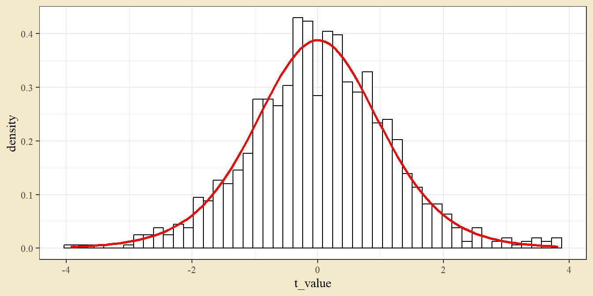
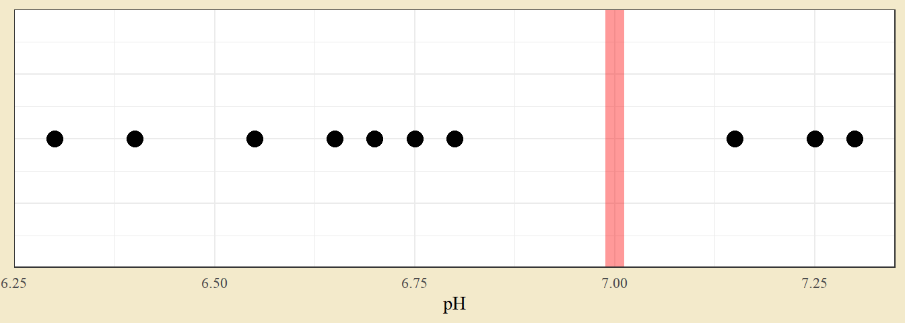

Kapitel 9 Variansanalys
Variansanalys (eller anova-modellen) är en statistisk modell där medelvärdet varierar beroende på en behandling och ett normalfördelat slumpfel. Från en anova-modell kan man beräkna ett F-test, som testar om det finns någon övergripande gruppskillnad, och post-hoc-test, som jämför specifika grupper med varandra.
Den specifika modellen beror på försöksupplägget. Här ges exempel på variansanalys med en faktor, en faktor med block, och två faktorer.
9.1 Variansanalys. En faktor
Vid variansanalys med en faktor har man ett upplägg där varje observation av en kontinuerlig utfallsvariabel är kopplad till en specifik grupp. Som exempel används en datamängd från ett odlingsförsök på havre. Datan finns tillgänglig i paketet MASS som oats. Försöket är ett två-faktoriellt försök med block. Faktorerna ges av havresort och kvävetillsättning; utfallsvariabeln är skördvikt. Som första exempel ignoreras sortvariabeln genom att beräkna medelvärde per block och kvävenivå.
dat <- MASS::oats
dat <- dat %>%
group_by(B, N) %>%
summarise(Y = mean(Y)) %>%
ungroup() %>%
as_tibble()
kable(dat %>% pivot_wider(names_from = N, values_from = Y),
digits = 1)| B | 0.0cwt | 0.2cwt | 0.4cwt | 0.6cwt |
|---|---|---|---|---|
| I | 111.0 | 128.0 | 145.3 | 157.0 |
| II | 75.7 | 107.7 | 114.7 | 131.0 |
| III | 72.3 | 98.3 | 111.0 | 102.0 |
| IV | 69.3 | 93.7 | 105.7 | 124.0 |
| V | 68.3 | 80.7 | 101.0 | 113.7 |
| VI | 79.7 | 85.0 | 107.7 | 112.7 |
Datan har 18 observationer av skördvikt och varje observation tillhör någon specifik kvävenivå. Datan kan illustreras med ett spridningsdiagram.
ggplot(dat, aes(N, Y)) +
geom_point()
Det finns en tydlig kväveeffekt.
En anova-modell kan i R skattas med funktionen lm (för linjär modell). Från modellobjektet kan man sedan plocka fram en anova-tabell (som bland annat anger utfallet av F-testet) och genomföra parvisa jämförelser genom emmeans.
mod <- lm(Y ~ N, data = dat)Modellen anges som en formel Y ~ N, vilket kan utläsas Y beroende på faktorn N. Detta följs av ett argument för det objekt som innehåller datan i kolumner (här dat).
För anova-tabellen används funktionen Anova från paketet car.
library(car)
Anova(mod)## Anova Table (Type II tests)
##
## Response: Y
## Sum Sq Df F value Pr(>F)
## N 6673.5 3 7.5563 0.001434 **
## Residuals 5887.8 20
## ---
## Signif. codes: 0 '***' 0.001 '**' 0.01 '*' 0.05 '.' 0.1 ' ' 1Anova-tabellen beräknas ett F-test. Testet har nollhypotesen att samtliga grupper har samma populationsmedelvärde - det låga p-värdet tyder på att nollhypotesen bör förkastas, vilket alltså pekar på att det finns någon eller några skillnader i medelvärde.
För att göra parvisa jämförelse används paketet emmeans och funktionen med samma namn. Funktionen tar modellobjektet som första argument och en formel för jämförelsetyp som andra argument (här pairwise ~ N, en parvis jämförelse mellan nivåer i N).
library(emmeans)
emmeans(mod, pairwise ~ N)## $emmeans
## N emmean SE df lower.CL upper.CL
## 0.0cwt 79.4 7 20 64.8 94
## 0.2cwt 98.9 7 20 84.3 114
## 0.4cwt 114.2 7 20 99.6 129
## 0.6cwt 123.4 7 20 108.8 138
##
## Confidence level used: 0.95
##
## $contrasts
## contrast estimate SE df t.ratio p.value
## 0.0cwt - 0.2cwt -19.50 9.91 20 -1.968 0.2328
## 0.0cwt - 0.4cwt -34.83 9.91 20 -3.516 0.0107
## 0.0cwt - 0.6cwt -44.00 9.91 20 -4.442 0.0013
## 0.2cwt - 0.4cwt -15.33 9.91 20 -1.548 0.4293
## 0.2cwt - 0.6cwt -24.50 9.91 20 -2.473 0.0953
## 0.4cwt - 0.6cwt -9.17 9.91 20 -0.925 0.7917
##
## P value adjustment: tukey method for comparing a family of 4 estimatesI den nedre tabellen med jämförelser ges alla parvisa jämförelser. Nollhypotesen är att de två grupper som jämförs har samma medelvärde - ett lågt p-värde tyder alltså på att de två grupperna är signifikant skilda. Notera också att p-värden justeras med tukey-metoden, även känt som Tukeys HSD.
Parvisa jämförelser presenteras ofta med signifikansbokstäver (en compact letter display, cld). Dessa kan plockas fram med multcomp-paketet.
em <- emmeans(mod, pairwise ~ N)
library(multcomp)
cld(em, Letters = letters)## N emmean SE df lower.CL upper.CL .group
## 0.0cwt 79.4 7 20 64.8 94 a
## 0.2cwt 98.9 7 20 84.3 114 ab
## 0.4cwt 114.2 7 20 99.6 129 b
## 0.6cwt 123.4 7 20 108.8 138 b
##
## Confidence level used: 0.95
## P value adjustment: tukey method for comparing a family of 4 estimates
## significance level used: alpha = 0.05
## NOTE: Compact letter displays can be misleading
## because they show NON-findings rather than findings.
## Consider using 'pairs()', 'pwpp()', or 'pwpm()' instead.Tolkning av grupperingen till höger är att grupper som delar en bokstav inte är signifikant skilda. I det här fallet är den lägsta nivån skild från de två högsta. I övrigt finns inga signifikanta skillnader. Jämför gärna med p-värdena från tabellen med parvisa jämförelser. Man bör se att parvisa jämförelser med ett p-värde under fem procent motsvaras av att de behandlingarna inte delar någon bokstav i bokstavstabellen.
9.2 Variansanalys. En faktor med block
Modellen med en faktor var en förenkling av den faktiska försökssituationen. Som första utbyggnad av modellen noteras att försöket är ett blockförsök. En eventuell blockeffekt kan illustreras med ett punktdiagram kombinerat med ett linjediagram.
ggplot(dat, aes(N, Y, color = B, group = B)) +
geom_point(size = 4) +
geom_line()
Färg och linje sammanbinder observationer från samma block. Det finns en klar blockeffekt, vilket är särskilt tydligt för block I, som uppvisar klart högre värden än andra block.
Blockeffekten kan enkelt föras in i modellen genom att lägga till variabeln B i lm-funktionen. Anova-tabellen och parvisa jämförelser kan göras på samma sätt som tidigare, men nu tas blockeffekten i beaktande.
mod_bl <- lm(Y ~ N + B, data = dat)
Anova(mod_bl)## Anova Table (Type II tests)
##
## Response: Y
## Sum Sq Df F value Pr(>F)
## N 6673.5 3 55.980 2.227e-08 ***
## B 5291.8 5 26.634 5.861e-07 ***
## Residuals 596.1 15
## ---
## Signif. codes: 0 '***' 0.001 '**' 0.01 '*' 0.05 '.' 0.1 ' ' 1P-värdet från F-testet på variabeln N är nu klart mindre än tidigare. Detta beror på att en stor del av variationen kan förklaras med blockeffekten, vilket är tydligt i att blockeffekten också har ett litet p-värde i F-testet.
cld(emmeans(mod_bl, ~ N), Letters = letters)## N emmean SE df lower.CL upper.CL .group
## 0.0cwt 79.4 2.57 15 73.9 84.9 a
## 0.2cwt 98.9 2.57 15 93.4 104.4 b
## 0.4cwt 114.2 2.57 15 108.7 119.7 c
## 0.6cwt 123.4 2.57 15 117.9 128.9 c
##
## Results are averaged over the levels of: B
## Confidence level used: 0.95
## P value adjustment: tukey method for comparing a family of 4 estimates
## significance level used: alpha = 0.05
## NOTE: Compact letter displays can be misleading
## because they show NON-findings rather than findings.
## Consider using 'pairs()', 'pwpp()', or 'pwpm()' instead.Även den parvisa jämförelsen påverkas av att ta med blocket. Signifikansbokstäver anger att den lägsta och näst lägsta nivån är skild från varandra och från de två högsta. En jämförelse med den tidigare tabellen över parvisa jämförelser visar att modellen med block ger samma medelvärdesskattningar men lägre medelfel (SE).
9.3 Variansanalys. Två faktorer med block
Den avslutande modellen tar med bägge faktorerna (sort och kväve) och blockfaktorn. Datan kan illustreras med ett punktdiagram där facet_wrap delar grafen efter sort.
dat <- MASS::oats
ggplot(dat, aes(N, Y, color = B)) +
geom_point(size = 4) +
facet_wrap(~ V)Grafen visar samma kvävesamband som tidigare. Det finns inga tydliga skillnader sorter, möjligen har sorten Victory givit något lägre skörd än övriga. Det finns också en tydlig blockeffekt, till exempel har block I höga värden och block V låga värden.
Modellen skattas genom att lägga till variabeln för sort (V för variety) i lm-formeln.
mod_two_fact <- lm(Y ~ N * V + B, data = dat)Formeln är nu Y ~ N * V + B. Stjärnan mellan N och V anger modellen med en interaktion mellan sort och kväve. Eftersom varje kombination av sort och kväve förekommer en gång i varje block, är det inte möjligt att skatta någon interaktionseffekt med blockfaktorn - blocket är då istället en additiv effekt.
Anovatabellen kan plockas fram på samma sätt som tidigare.
Anova(mod_two_fact)## Anova Table (Type II tests)
##
## Response: Y
## Sum Sq Df F value Pr(>F)
## N 20020.5 3 26.2510 1.135e-10 ***
## V 1786.4 2 3.5134 0.03665 *
## B 15875.3 5 12.4894 4.093e-08 ***
## N:V 321.8 6 0.2109 0.97187
## Residuals 13982.1 55
## ---
## Signif. codes: 0 '***' 0.001 '**' 0.01 '*' 0.05 '.' 0.1 ' ' 1Raden N:V gäller interaktionseffekten mellan kväve och sort. I det här fallet är det ingen signifikant interaktion - vilket tyder på att sorterna svarar på kvävebehandling på liknande sätt. Samtliga huvudeffekter (raderna för N, V och B) är signifikanta. Kvadratsummorna och p-värdena tyder på att kväve förklarar mer av variationen än sort, vilket också är i linje med grafen ovan.
Vid flerfaktoriella försök kan man presentera parvisa jämförelser på flera olika sätt. Man kan ange huvudeffekter för en faktor utan att ange den andra faktorn, man kan ange medelvärden för samtliga kombinationer av två faktorer, och man kan ange medelvärden uppdelat efter nivåer i en annan faktor.
emmeans(mod_two_fact, ~ N)## N emmean SE df lower.CL upper.CL
## 0.0cwt 79.4 3.76 55 71.9 86.9
## 0.2cwt 98.9 3.76 55 91.4 106.4
## 0.4cwt 114.2 3.76 55 106.7 121.8
## 0.6cwt 123.4 3.76 55 115.9 130.9
##
## Results are averaged over the levels of: V, B
## Confidence level used: 0.95emmeans(mod_two_fact, ~ N + V)## N V emmean SE df lower.CL upper.CL
## 0.0cwt Golden.rain 80.0 6.51 55 67.0 93.0
## 0.2cwt Golden.rain 98.5 6.51 55 85.5 111.5
## 0.4cwt Golden.rain 114.7 6.51 55 101.6 127.7
## 0.6cwt Golden.rain 124.8 6.51 55 111.8 137.9
## 0.0cwt Marvellous 86.7 6.51 55 73.6 99.7
## 0.2cwt Marvellous 108.5 6.51 55 95.5 121.5
## 0.4cwt Marvellous 117.2 6.51 55 104.1 130.2
## 0.6cwt Marvellous 126.8 6.51 55 113.8 139.9
## 0.0cwt Victory 71.5 6.51 55 58.5 84.5
## 0.2cwt Victory 89.7 6.51 55 76.6 102.7
## 0.4cwt Victory 110.8 6.51 55 97.8 123.9
## 0.6cwt Victory 118.5 6.51 55 105.5 131.5
##
## Results are averaged over the levels of: B
## Confidence level used: 0.95emmeans(mod_two_fact, ~ N | V)## V = Golden.rain:
## N emmean SE df lower.CL upper.CL
## 0.0cwt 80.0 6.51 55 67.0 93.0
## 0.2cwt 98.5 6.51 55 85.5 111.5
## 0.4cwt 114.7 6.51 55 101.6 127.7
## 0.6cwt 124.8 6.51 55 111.8 137.9
##
## V = Marvellous:
## N emmean SE df lower.CL upper.CL
## 0.0cwt 86.7 6.51 55 73.6 99.7
## 0.2cwt 108.5 6.51 55 95.5 121.5
## 0.4cwt 117.2 6.51 55 104.1 130.2
## 0.6cwt 126.8 6.51 55 113.8 139.9
##
## V = Victory:
## N emmean SE df lower.CL upper.CL
## 0.0cwt 71.5 6.51 55 58.5 84.5
## 0.2cwt 89.7 6.51 55 76.6 102.7
## 0.4cwt 110.8 6.51 55 97.8 123.9
## 0.6cwt 118.5 6.51 55 105.5 131.5
##
## Results are averaged over the levels of: B
## Confidence level used: 0.95Även här kan man göra jämförelser mellan nivåer genom att sätta pairwise ~ N + V eller beräkna signifikansbokstäver med cld.
9.4 Övningar
Övning 9.1 (Jämförelse mellan t-test och anova) Detta är ett datamaterial som jämför hållfastheten hos murbruk för två oberoende stickprov.
| Behandling | Hållfasthet |
|---|---|
| Ny | 16.85 |
| Ny | 16.40 |
| Ny | 17.21 |
| Ny | 16.36 |
| Ny | 16.52 |
| Ny | 17.04 |
| Ny | 16.96 |
| Ny | 17.15 |
| Ny | 16.59 |
| Ny | 16.57 |
| Standard | 17.50 |
| Standard | 17.63 |
| Standard | 18.25 |
| Standard | 18.00 |
| Standard | 17.86 |
| Standard | 17.75 |
| Standard | 18.22 |
| Standard | 17.90 |
| Standard | 17.96 |
| Standard | 18.15 |
a. Gör ett t-test för att se om det är någon skillnad mellan de två behandlingarna. Anta att varianserna är lika för de två behandlingarna.
b. Använd envägs-anova för att se om det är skillnad. Är modellantaganden om normalfördelade residualer och lika varians inom grupper uppfyllda?
c. Jämför resultaten i (a) och (b).
Lösningsförslag 9.1 (Jämförelse mellan t-test och anova) a.
dat <- tibble(Behandling = rep(c("Ny", "Standard"), each = 10),
Hållfasthet = c(16.85,16.40,17.21,16.36,16.52,
17.04,16.96,17.15,16.59,16.57,
17.50,17.63,18.25,18.00,17.86,
17.75,18.22,17.90,17.96,18.15))
ggplot(dat, aes(Behandling, Hållfasthet)) +
geom_point()En graf visar på en mycket tydlig behandlingsskillnad. Det finns inga tydliga extremvärden och grupperna verkar ha samma varians inom gruppen.
t.test(Hållfasthet ~ Behandling, dat, var.equal = T)##
## Two Sample t-test
##
## data: Hållfasthet by Behandling
## t = -9.1272, df = 18, p-value = 3.572e-08
## alternative hypothesis: true difference in means between group Ny and group Standard is not equal to 0
## 95 percent confidence interval:
## -1.4233204 -0.8906796
## sample estimates:
## mean in group Ny mean in group Standard
## 16.765 17.922Ett mycket lågt p-värde tyder på att det finns en skillnad mellan grupperna.
b. Modellen kan skattas med lm. Modellekvationen ges av Hållbarhet ~ Behandling, vilket kan utläsas som hållbarhet beroende på behandling.
mod <- lm(Hållfasthet ~ Behandling, dat)
library(car)
Anova(mod)## Anova Table (Type II tests)
##
## Response: Hållfasthet
## Sum Sq Df F value Pr(>F)
## Behandling 6.6932 1 83.306 3.572e-08 ***
## Residuals 1.4462 18
## ---
## Signif. codes: 0 '***' 0.001 '**' 0.01 '*' 0.05 '.' 0.1 ' ' 1Ett mycket lågt p-värde tyder på att det finns en skillnad mellan grupperna.
Modellantaganden (normalfördelning och lika varianser inom grupper) kan undersökas med diagnosplottar. QQ-grafen visar eventuella avvikelser från en normalfördelning (om data är normalfördelad följer punkterna diagonalen) och spridningsdiagram visar eventuella skillnader i spridning.
qqnorm(residuals(mod))
qqline(residuals(mod))
plot(residuals(mod) ~ fitted(mod))
Diagnostik-grafer pekar inte på några extrema avvikelser från normalantagandet (punkterna följer den diagonala linjen ganska väl) eller antagandet om lika varianser (de två kolumnerna med punkter har ungefär samma spridning).
c. F-testet i (b) ger samma p-värde som t-test i (a).
Övning 9.2 (Äppelinfektion) En studie har givit ett mått på infektion hos äppelträd. Fyra sorter jämförs med tre replikat per sort.
| Sort | Angrepp |
|---|---|
| A | 72.3 |
| A | 59.5 |
| A | 42.4 |
| B | 44.7 |
| B | 38.2 |
| B | 46.8 |
| C | 48.7 |
| C | 43.1 |
| C | 54.8 |
| D | 52.4 |
| D | 61.7 |
| D | 67.3 |
a. Skatta anova-modellen och ta fram anova-tabellen.
b. Undersök om residualerna är normalfördelade.
c. Jämför sorter med Tukeys HSD.
d. Jämför sorter med Fishers LSD.
Lösningsförslag 9.2 (Äppelinfektion) Data kan läsas in från excelfilen med uppgiftsdata.
library(readxl)
dat <- read_excel("Data/Uppgiftsdata.xlsx", sheet = "Äppelangrepp")
ggplot(dat, aes(Sort, Angrepp)) +
geom_point()
Grafen visar svaga tecken på skillnader, men inga tydliga mönster.
a.
mod <- lm(Angrepp ~ Sort, dat)
library(car)
Anova(mod)## Anova Table (Type II tests)
##
## Response: Angrepp
## Sum Sq Df F value Pr(>F)
## Sort 580.28 3 2.3025 0.1538
## Residuals 672.07 8F-testet testar nollhypotesen att alla grupper har samma populationsmedelvärde. Det höga p-värdet ger att det inte finns signifikanta skillnader mellan sorter.
b.
qqnorm(residuals(mod))
qqline(residuals(mod))Ungefärligt normalfördelat.
c.
library(emmeans)
multcomp::cld(emmeans(mod, ~ Sort)) # Tukey## Sort emmean SE df lower.CL upper.CL .group
## B 43.2 5.29 8 31.0 55.4 1
## C 48.9 5.29 8 36.7 61.1 1
## A 58.1 5.29 8 45.9 70.3 1
## D 60.5 5.29 8 48.3 72.7 1
##
## Confidence level used: 0.95
## P value adjustment: tukey method for comparing a family of 4 estimates
## significance level used: alpha = 0.05
## NOTE: Compact letter displays can be misleading
## because they show NON-findings rather than findings.
## Consider using 'pairs()', 'pwpp()', or 'pwpm()' instead.Tukey-testet pekar på att det inte finns några skillnader mellan sorterna.
d.
multcomp::cld(emmeans(mod, ~ Sort, adjust = "none")) # Fisher## Sort emmean SE df lower.CL upper.CL .group
## B 43.2 5.29 8 31.0 55.4 1
## C 48.9 5.29 8 36.7 61.1 1
## A 58.1 5.29 8 45.9 70.3 1
## D 60.5 5.29 8 48.3 72.7 1
##
## Confidence level used: 0.95
## P value adjustment: tukey method for comparing a family of 4 estimates
## significance level used: alpha = 0.05
## NOTE: Compact letter displays can be misleading
## because they show NON-findings rather than findings.
## Consider using 'pairs()', 'pwpp()', or 'pwpm()' instead.Fishers LSD pekar på att det inte finns några skillnader mellan sorterna.
Övning 9.3 (Majshybrider) Fyra majssorter planteras på fem platser (som agerar som fem block). Datan ges av följande tabell.
| Hybrid | Nordväst | Nordost | Centralt | Sydost | Sydväst |
|---|---|---|---|---|---|
| FR-11 | 62 | 64 | 64 | 65 | 66 |
| BCM | 63 | 63 | 66 | 67 | 64 |
| DBC | 61 | 64 | 65 | 62 | 65 |
| RC-3 | 55 | 56 | 60 | 58 | 59 |
a. Skatta en anova-modell med block och ta fram anova-tabellen. Finns det signifikanta skillander mellan hybrider? Mellan block?
b. Använd Tukey-metoden för parvisa jämförelser mellan hybrider.
Lösningsförslag 9.3 (Majshybrider) Data kan läsas in från excelfilen med uppgiftsdata.
dat <- read_excel("Data/Uppgiftsdata.xlsx", sheet = "Majshybrider")
ggplot(dat, aes(Hybrid, Avkastning, group = Plats, col = Plats)) +
geom_point() +
geom_line()
Tecken på både platseffekt (nordväst alltid lägst) och hybrideffekt (RC3 lägre än övriga).
mod <- lm(Avkastning ~ Hybrid + Plats, dat)
Anova(mod)## Anova Table (Type II tests)
##
## Response: Avkastning
## Sum Sq Df F value Pr(>F)
## Hybrid 160.55 3 34.3422 3.607e-06 ***
## Plats 33.70 4 5.4064 0.01004 *
## Residuals 18.70 12
## ---
## Signif. codes: 0 '***' 0.001 '**' 0.01 '*' 0.05 '.' 0.1 ' ' 1multcomp::cld(emmeans(mod, ~ Hybrid), Letters = letters)## Hybrid emmean SE df lower.CL upper.CL .group
## RC-3 57.6 0.558 12 56.4 58.8 a
## DBC 63.4 0.558 12 62.2 64.6 b
## FR-11 64.2 0.558 12 63.0 65.4 b
## BCM 64.6 0.558 12 63.4 65.8 b
##
## Results are averaged over the levels of: Plats
## Confidence level used: 0.95
## P value adjustment: tukey method for comparing a family of 4 estimates
## significance level used: alpha = 0.05
## NOTE: Compact letter displays can be misleading
## because they show NON-findings rather than findings.
## Consider using 'pairs()', 'pwpp()', or 'pwpm()' instead.Klart signifikanta skillnader mellan hybrider. Post-hoc-tester ger att RC-3 har lägre avkastning av övriga.
Övning 9.4 (Maskiner med och utan block) I en fabrik testas tre olika maskiner i produktionen. Utfallsvariabeln är hur mycket tid maskinen behöver för tryckpressa en stol. Man vill undersöka om det är en skillnad mellan maskiner. Resultatet ges nedan.
| Maskin | 1 | 2 | 3 | 4 | 5 | 6 |
|---|---|---|---|---|---|---|
| A | 34 | 38 | 32 | 41 | 41 | 36 |
| B | 30 | 31 | 33 | 40 | 39 | 35 |
| C | 27 | 30 | 29 | 31 | 36 | 32 |
a. Antag att den som gjorde experimentet randomiserade ordningen på de 18 försöken och gjorde alla under en dag. Analysera försöket med envägs anova-modell för att se om det är någon skillnad mellan maskinerna.
b. Om där är en skillnad, vilka maskiner skiljer sig åt?
c. Vilka antaganden gjordes i analysen? Undersök om dessa är uppfyllda genom att använda lämpliga diagnosgrafer.
d. Någon säger att försöket inte är gjort under en dag utan att replikat i själva verket anger vilken dag som försöket gjordes. Man vill därför använda replikat som block i försöket. Gör detta och undersök om detta förändrar resultatet. Tror du att replikat anger olika dagar?
Lösningsförslag 9.4 (Maskiner med och utan block) Datan kan skrivas in som en tibble och illustreras med ett enkelt spridningsdiagram.
dat <- tibble(Maskin = rep(c("A", "B", "C"), each = 6),
Replikat = rep(1:6, 3),
Tid = c(34,38,32,41,41,36,
30,31,33,40,39,35,
27,30,29,31,36,32))
ggplot(dat, aes(Maskin, Tid, group = Replikat)) +
geom_point() +
geom_line()
Det finns tecken på skillnader i tid (Maskin C ligger lägre).
a. En enkel anova-modell skattas för att testa eventuella maskinskillnader.
mod <- lm(Tid ~ Maskin, dat)
Anova(mod)## Anova Table (Type II tests)
##
## Response: Tid
## Sum Sq Df F value Pr(>F)
## Maskin 116.33 2 4.3589 0.03218 *
## Residuals 200.17 15
## ---
## Signif. codes: 0 '***' 0.001 '**' 0.01 '*' 0.05 '.' 0.1 ' ' 1F-testet för faktorn Maskin ger ett p-värde på 0.03. Eftersom det är under fem procent förkastas nollhypotesen att maskinerna ger samma medelvärde.
b.
emmeans(mod, pairwise ~ Maskin)## $emmeans
## Maskin emmean SE df lower.CL upper.CL
## A 37.0 1.49 15 33.8 40.2
## B 34.7 1.49 15 31.5 37.8
## C 30.8 1.49 15 27.7 34.0
##
## Confidence level used: 0.95
##
## $contrasts
## contrast estimate SE df t.ratio p.value
## A - B 2.33 2.11 15 1.106 0.5249
## A - C 6.17 2.11 15 2.924 0.0267
## B - C 3.83 2.11 15 1.818 0.1976
##
## P value adjustment: tukey method for comparing a family of 3 estimatesPost-hoc-tester visar på en skillnad mellan maskin A och C.
c. Modellen bygger på antagandet att residualerna är normalfördelade och att grupperna har samma varians.
qqnorm(residuals(mod))
qqline(residuals(mod))
plot(residuals(mod) ~ fitted(mod))
En graf över residualerna visar inte på några tydliga brister i antaganden.
d. Replikat används som en block-faktor i försöket. För att R ska tolka variabeln Replikat korrekt ändras dess typ till character.
dat <- dat %>% mutate(Replikat = as.character(Replikat))
mod <- lm(Tid ~ Maskin + Replikat, dat)
Anova(mod)## Anova Table (Type II tests)
##
## Response: Tid
## Sum Sq Df F value Pr(>F)
## Maskin 116.33 2 15.7207 0.0008181 ***
## Replikat 163.17 5 8.8198 0.0019704 **
## Residuals 37.00 10
## ---
## Signif. codes: 0 '***' 0.001 '**' 0.01 '*' 0.05 '.' 0.1 ' ' 1emmeans(mod, pairwise ~ Maskin)## $emmeans
## Maskin emmean SE df lower.CL upper.CL
## A 37.0 0.785 10 35.3 38.7
## B 34.7 0.785 10 32.9 36.4
## C 30.8 0.785 10 29.1 32.6
##
## Results are averaged over the levels of: Replikat
## Confidence level used: 0.95
##
## $contrasts
## contrast estimate SE df t.ratio p.value
## A - B 2.33 1.11 10 2.101 0.1393
## A - C 6.17 1.11 10 5.553 0.0006
## B - C 3.83 1.11 10 3.452 0.0156
##
## Results are averaged over the levels of: Replikat
## P value adjustment: tukey method for comparing a family of 3 estimatesOm replikat tas med i modellen förtydligas behandlingseffekten. F-testet ger en mycket starkare signifikans än tidigare och post-hoc-testet ger en signifikant skillnad mellan B och C (utöver den tidigare signifikanta skillnaden mellan A och C).